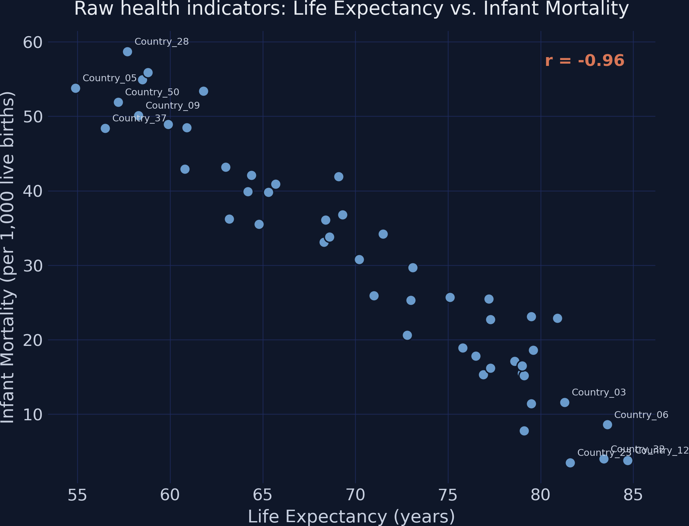
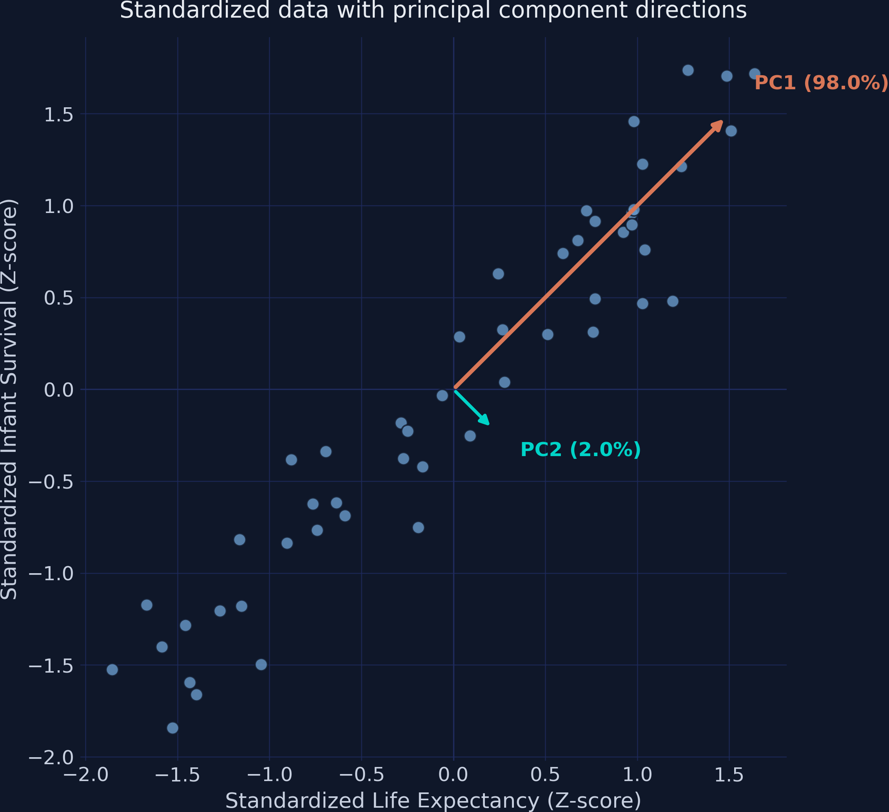
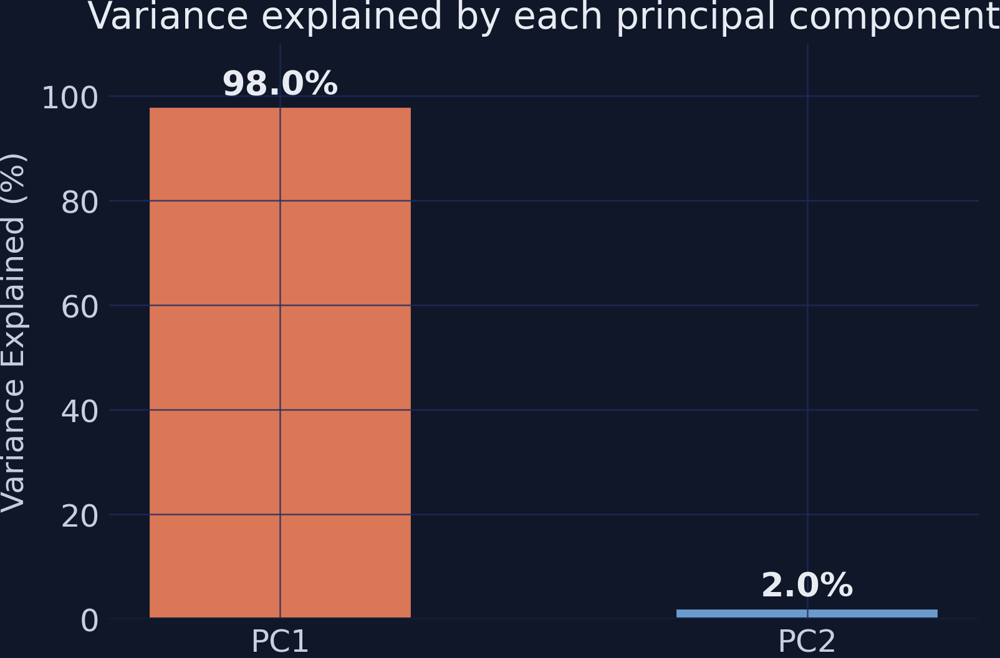
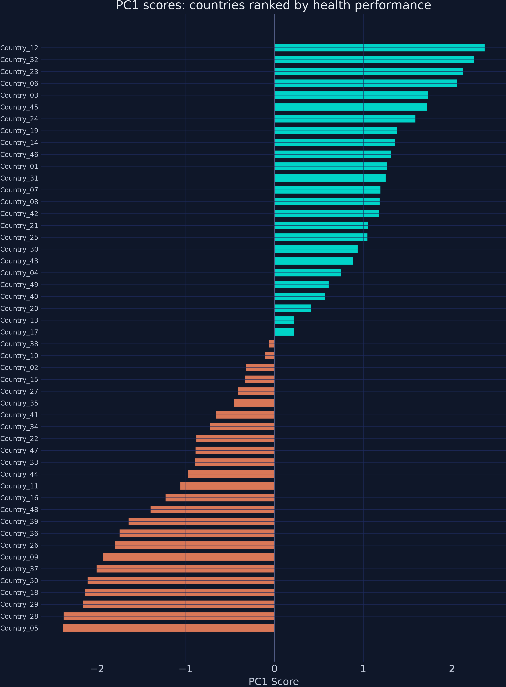
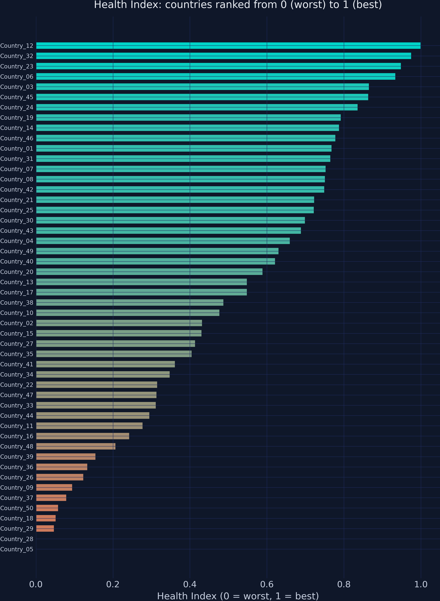
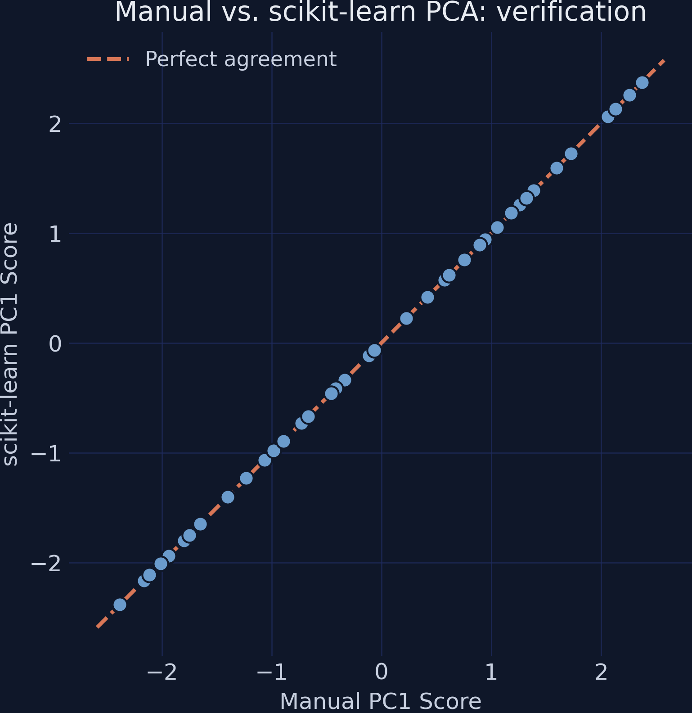

Compressing correlated indicators into one composite index
Nagoya University (GSID)
July 8, 2026
Act I
Life expectancy is in years. Infant mortality is a rate per 1,000. You cannot add years to rates.
And the two pull in opposite directions — more years is good, more deaths is bad. Which single number captures a country’s health?

Raw health indicators for 50 simulated countries: a very strong negative relationship, \(r = -0.96\).
Act II
No step can be skipped — each one feeds the next.
\[IM_i^{*} = -1 \times IM_i\]
Multiply the “more is bad” indicator by \(-1\) — now bigger always means healthier.
The raw correlation flips from \(-0.96\) to \(+0.96\); same relationship, properly aligned.
\[Z_{ij} = \frac{X_{ij} - \bar{X}_j}{\sigma_j}\]
Subtract the mean, divide by the SD — both indicators become mean 0, SD 1 and directly comparable.
We use the population SD (\(\sigma\), ddof=0): PCA treats the dataset as the full population.
\[\Sigma = \frac{1}{n} Z^\top Z = \begin{pmatrix} 1 & r \\ r & 1 \end{pmatrix}\]
Standardized data puts 1s on the diagonal and the correlation \(r\) off-diagonal.
Here the off-diagonal is \(r = 0.96\) — the two indicators move almost in lockstep.
\[\Sigma \mathbf{v} = \lambda \mathbf{v}\]
Eigenvector \(\mathbf{v}\) = direction of greatest spread (the index weights). Eigenvalue \(\lambda\) = variance along it.
For a \(2\times2\) correlation matrix: \(\lambda_1 = 1 + r\), \(\lambda_2 = 1 - r\).

PC1 and PC2 eigenvector arrows over the standardized data — PC1 (orange) runs along the diagonal of maximum spread.

PC1 captures 98.0% of total variance; PC2 captures just 2.0%.
| Component | \(w_1\) (LE) | \(w_2\) (IM*) | Variance |
|---|---|---|---|
| PC1 | 0.7071 | 0.7071 | 97.97% |
| PC2 | 0.7071 | −0.7071 | 2.03% |
\(0.7071 \approx 1/\sqrt{2}\) — a mathematical certainty for any two standardized variables, regardless of \(r\).
\[PC1_i = w_1 Z_{i,LE} + w_2 Z_{i,IM}\]
The eigenvector is the recipe — multiply each z-score by its weight and sum.

50 countries ranked by PC1 score — teal above average, orange below, roughly symmetric around zero.
\[HI_i = \frac{PC1_i - PC1_{\min}}{PC1_{\max} - PC1_{\min}}\]
Min-max scaling: worst → 0, best → 1, everyone proportional between.
Country_01’s PC1 of 1.27 becomes a Health Index of 0.77 — “better than 77% of the scale.”

Health Index for 50 countries, orange (worst) to teal (best). Country_05 sits at exactly 0.00.
Act III
97.97%
variance retained by a single composite index built from two correlated indicators

Manual vs scikit-learn PC1 scores: all 50 points fall on the 45-degree line of perfect agreement.
| Step | Output | Key result |
|---|---|---|
| Polarity | \(IM^{*} = -IM\) | \(r\): \(-0.96 \to +0.96\) |
| Standardize | \(Z\) | mean 0, SD 1 |
| Covariance | \(2\times2\) matrix | off-diagonal \(r = 0.96\) |
| Eigen-decompose | \(\lambda\), \(\mathbf{v}\) | PC1 = 98.0% |
| Score | PC1 | range \([-2.39, 2.37]\) |
| Normalize | Health Index | range \([0.00, 1.00]\) |
Objection. With two standardized variables the weights are forced to 0.7071 each, so PC1 is just a scaled average — why bother with eigen-decomposition?
Response. True in the two-variable case. But the machinery is what scales: with 15 or 20 indicators PCA discovers unequal weights that reflect each variable’s unique contribution — something no manual averaging scheme can find. The two-variable case is a transparent warm-up, not the destination.